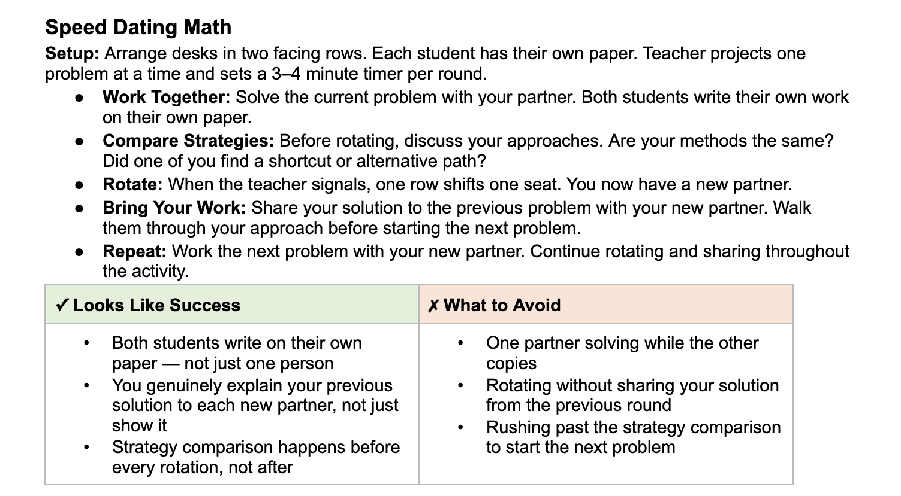
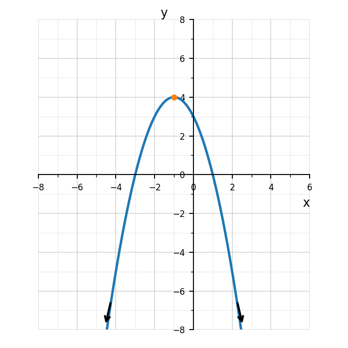

Problem 2
Use the number line to write the set in interval notation.


Determine the domain of $h(x)=\sqrt{x+2}$.
For a square root, the expression under the radical must be nonnegative.
$x+2\ge 0$
$x\ge -2$
Domain: $[-2,\infty)$
Use the number line to write the set in interval notation.
The graph starts at $-2$ with an open circle and ends at $5$ with a closed circle.
Interval notation: $(-2,5]$
Determine the domain and range of the graphed function. Use interval notation.

The graph continues left and right forever, so the domain is all real numbers.
Domain: $(-\infty,\infty)$
The highest point is the vertex $(-1,4)$, and the graph continues downward forever.
Range: $(-\infty,4]$
A student says the domain of $f(x)=\sqrt{x-4}$ is all real numbers because any number can be substituted for $x$. Explain the error and give the correct domain.
The error is ignoring the square root restriction. The radicand must be nonnegative.
$x-4\ge 0$
$x\ge 4$
Correct domain: $[4,\infty)$
Which equation has exactly one real solution?
Explain how you know.
The correct choice is a.
$x^2-10x+25=(x-5)^2$, so the equation has one repeated solution: $x=5$.
Which equation has no real solutions?
Explain how you know.
The correct choice is c.
For $x^2+6x+10=0$, the discriminant is $6^2-4(1)(10)=36-40=-4$.
A negative discriminant means there are no real solutions.
For each expression, state what number must be added to complete the square.
Use $\left(\frac{b}{2}\right)^2$.
Which expression is equivalent to:
$$x^2-6x+9$$
The correct choice is a.
$(x-3)^2=(x-3)(x-3)=x^2-6x+9$.
Solve by completing the square.
$$x^2+8x+7=0$$
Move the constant term.
$x^2+8x=-7$
Add $16$ to both sides.
$x^2+8x+16=9$
$(x+4)^2=9$
$x+4=\pm3$
$x=-1$ or $x=-7$
Solve using the quadratic formula.
$$2x^2-5x-3=0$$
Use $a=2$, $b=-5$, and $c=-3$.
$x=\frac{-(-5)\pm\sqrt{(-5)^2-4(2)(-3)}}{2(2)}$
$x=\frac{5\pm\sqrt{25+24}}{4}$
$x=\frac{5\pm7}{4}$
$x=3$ or $x=-\frac{1}{2}$
A student calculates the discriminant for:
$$2x^2-3x+8=0$$
as:
$$\Delta=(-3)^2-4(2)(8)=9-64=-55$$
“Since the discriminant is negative, there are no solutions.”
What should the student have said instead? Explain carefully.
The student should have said there are no real solutions.
A negative discriminant means the solutions are not real numbers. The equation still has complex solutions.
A company models profit by:
$$P(x)=-2x^2+24x-50$$
where $x$ is the number of items sold in hundreds and $P(x)$ is profit in thousands of dollars.
Evaluate each expression without a calculator.
Determine whether each expression is real.
Even roots of negative numbers are not real. Odd roots of negative numbers are real.
Simplify by first simplifying each radical, then combining like radicals.
A student simplifies:
$$\sqrt{72}=\sqrt{36+36}=6+6=12.$$
Explain the error and simplify correctly.
The error is splitting a square root across addition. In general, $\sqrt{a+b}\ne \sqrt{a}+\sqrt{b}$.
Use multiplication with a perfect-square factor:
$\sqrt{72}=\sqrt{36\cdot2}=6\sqrt{2}$